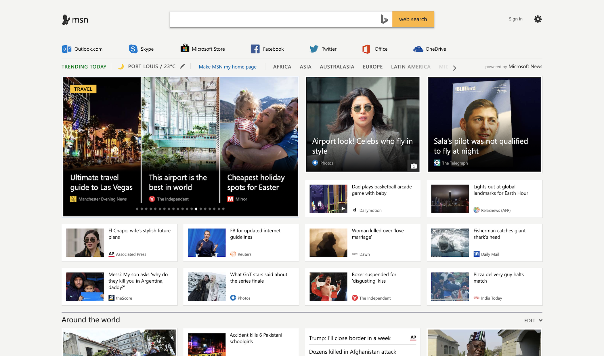
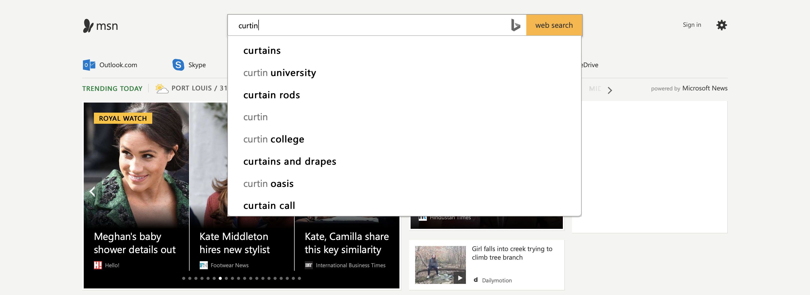

Content
Msn's website consists of different categories of information that are updated daily and
regularly on a hourly basis. The categories include: "Around the world", "Life", "Sport",
"Features" and "Video". The website uses its own and others' latest information and displays them
as main fresh news that are displayed in section. As a user clicks on the widget of any section,
the website redirects the user to the page or leave the website to go to the targeted website.
The creator of this website is Microsoft and is very informative as it contains a pool of
information juste clicks away from interested users. However, due to the large amount of information
available, it can be seen that there are many articles that consists of stalking celebrities, irrelevant
information that contains no facts. For example, it can be seen above that a pizza delivery guy halted
a match. This piece of information is not informative and can be regarded as a passive information.
Navigation
The navigation of the website is very simple. The main focus of this website is to read news/
videos. A main search bar can be found sitting on top of the interface. Users can swap between
information when reading a particular news by clicking on the left and right arrows as shown
below. Users can also find other useful resources on the same page while reading. They do not
have to go to the previous page for more information. However, the website is too simple and uses
same styling on every pages.

Layout
The layout of this website involves in partition of the web page where the page is broken
down into different sections and a main auto sliding widget displaying different types of
information. The creator has not focused deeply on design as it contains simple styling
but a collection of boxes to make the news container fit. Moreover, the developers have
made sure that the information containers are in place so people can read at ease. There
are no additional design or animations to entice users. Users might not really care about
the design of the website as long as the information is relevant.
Web Technologies Used
Msn uses the following technologies to provide users with a good experience of their
website. Msn uses HTML5, CSS, jQuery, C#, SQL Server, IIS and .NET as the running components.
Overall Functionality

The overall functionality of this website is that it serves its purpose as portraying
latest news and all kinds of news that a user might be interested to read or view.
Users can search for any topic that are of their interest using the search bar which is very
useful as shown above. The website also has a navigation bar that redirect users to Outlook,
Skype, Facebook and other services that are trending. Users can also share news to other platforms
namely: WhatsApp, Facebook, Vimeo, Twitter or by mail. However, it must be noted that when a user
is reading a clicked information, when scrolled down, the navigation bar is a little buggy. Hence,
the website is not completely error-free and contains bugs that needs to be remediated soon.
User Experience
As a typical user, Msn tries to target people to visit their website everyday through relevant
facts and news and also with celebrities comments to lure more people. Overall the website is
good to use and smooth when reading the information. There are many useful information that can
be found to broaden one's mind. But there are changes that can be made to facilitate users when
reading. For example, Msn could have implemented a category place in the pages where users can
easily can genre of topic without returning to the homepage. Hence, reducing the time spent to
change category of topics.